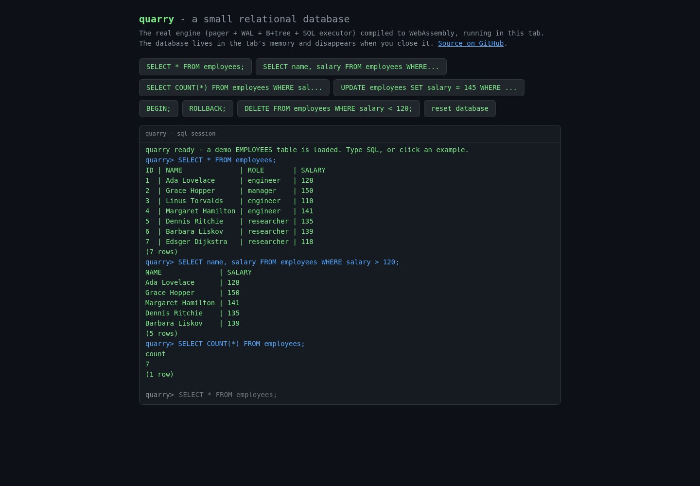

SELECTED WORK / 01
Quarry
SYSTEMS / C
PROJECT SCREENSHOT

STATIC SCREENSHOT / OPEN THE PROJECT TO INTERACT
OPEN QUARRY PROJECT ↗A database, below the surface.
A small relational database built from scratch in C. B+tree storage, write-ahead logging and crash recovery, with a SQL playground in the browser.
SCOPE / Storage engine, SQL, browser demo